Last updated: 2025-10-15
Checks: 7 0
Knit directory: immgen-t-factors/analysis/
This reproducible R Markdown analysis was created with workflowr (version 1.7.1). The Checks tab describes the reproducibility checks that were applied when the results were created. The Past versions tab lists the development history.
Great! Since the R Markdown file has been committed to the Git repository, you know the exact version of the code that produced these results.
Great job! The global environment was empty. Objects defined in the global environment can affect the analysis in your R Markdown file in unknown ways. For reproduciblity it’s best to always run the code in an empty environment.
The command set.seed(1) was run prior to running the
code in the R Markdown file. Setting a seed ensures that any results
that rely on randomness, e.g. subsampling or permutations, are
reproducible.
Great job! Recording the operating system, R version, and package versions is critical for reproducibility.
Nice! There were no cached chunks for this analysis, so you can be confident that you successfully produced the results during this run.
Great job! Using relative paths to the files within your workflowr project makes it easier to run your code on other machines.
Great! You are using Git for version control. Tracking code development and connecting the code version to the results is critical for reproducibility.
The results in this page were generated with repository version fe9d225. See the Past versions tab to see a history of the changes made to the R Markdown and HTML files.
Note that you need to be careful to ensure that all relevant files for
the analysis have been committed to Git prior to generating the results
(you can use wflow_publish or
wflow_git_commit). workflowr only checks the R Markdown
file, but you know if there are other scripts or data files that it
depends on. Below is the status of the Git repository when the results
were generated:
Untracked files:
Untracked: analysis/extreme_values.Rmd
Untracked: analysis/extreme_values.Rmd~
Untracked: analysis/temp3.R
Untracked: analysis/temp4.R
Untracked: data/flashier_snmf_ldf.RData
Untracked: outputs/fl_nmf_k=20.RData
Untracked: outputs/fl_nmf_k=25.RData
Untracked: outputs/fl_nmf_k=30.RData
Untracked: outputs/fl_nmf_k=40.RData
Unstaged changes:
Modified: analysis/extreme_values.R
Modified: analysis/temp.R
Modified: analysis/temp2.R
Note that any generated files, e.g. HTML, png, CSS, etc., are not included in this status report because it is ok for generated content to have uncommitted changes.
These are the previous versions of the repository in which changes were
made to the R Markdown (analysis/t_cell_nmf_k20.Rmd) and
HTML (docs/t_cell_nmf_k20.html) files. If you’ve configured
a remote Git repository (see ?wflow_git_remote), click on
the hyperlinks in the table below to view the files as they were in that
past version.
| File | Version | Author | Date | Message |
|---|---|---|---|---|
| Rmd | fe9d225 | Peter Carbonetto | 2025-10-15 | wflow_publish("index.Rmd") |
| html | 74e0f09 | Peter Carbonetto | 2025-10-02 | Implemented function rank_effects_by_group_contrasts() in |
| Rmd | 568c04e | Peter Carbonetto | 2025-10-02 | wflow_publish("t_cell_nmf_k20.Rmd", view = F, verbose = T) |
| html | 252fdc5 | Peter Carbonetto | 2025-10-02 | Build site. |
| Rmd | d2cde61 | Peter Carbonetto | 2025-10-02 | wflow_publish("t_cell_nmf_k20.Rmd", view = F, verbose = T) |
| html | 262d2c9 | Peter Carbonetto | 2025-09-30 | Build site. |
| Rmd | 20a335d | Peter Carbonetto | 2025-09-30 | wflow_publish("t_cell_nmf_k20.Rmd", verbose = T, view = F) |
| Rmd | 3d66cbb | Peter Carbonetto | 2025-09-30 | Added a boxplot for factor 7. |
| Rmd | 76ab85f | Peter Carbonetto | 2025-09-30 | Added a Structure plot for the Treg cells. |
| Rmd | 9b46810 | Peter Carbonetto | 2025-09-30 | Added a code chunk to t_cell_nmf_k20.Rmd to show all the structure plots together in one place. |
| Rmd | 5cb1ae3 | Peter Carbonetto | 2025-09-30 | Added structure plots for CD4+ and CD8+ T cells to t_cell_nmf_k20 analysis. |
| Rmd | 4760259 | Peter Carbonetto | 2025-09-30 | Added Structure plot by condition to t_cell_nmf_k20.Rmd. |
| Rmd | 047e069 | Peter Carbonetto | 2025-09-30 | Added a couple Structure plots to the t_cell_nmf_k20 analysis. |
| html | feebf23 | Peter Carbonetto | 2025-09-30 | First build of the t_cell_nmf_k20 workflowr analysis. |
| Rmd | f9f9f1d | Peter Carbonetto | 2025-09-30 | wflow_publish("t_cell_nmf_k20.Rmd", view = F, verbose = T) |
Here I’m exploring whether a non-negative matrix factorization (NMF) of the shifted log counts is a better model for these data. While I do not expect that \(K = 20\) factors will be sufficient to capture all the interesting structure, it should reveal the primary structure, and the hope is that this model will help us understand whether NMF is the right approach for these data.
Load the packages needed for this analysis:
library(Matrix)
library(fastTopics)
library(flashier)
library(ggplot2)
library(cowplot)
library(singlecelljamboreeR)Load the meta-data and the semi-NMF results:
load("../outputs/fl_nmf_k=20.RData")
L <- fl_nmf_ldf$L
F <- fl_nmf_ldf$F
k <- ncol(L)
colnames(L) <- paste0("k",1:20)
colnames(F) <- paste0("k",1:20)
rm(fl_nmf_ldf)These are the colors I will use throughout:
factor_colors <- c("#66a61e","limegreen","#7570b3","#d95f02","#fdbf6f",
"#1f78b4","#e31a1c","magenta","#b2df8a","#66c2a5",
"#a6cee3","#e6ab02","#a6761d","#1b9e77","#ff7f00",
"gold","cyan","#8da0cb","#33a02c","#e7298a")
names(factor_colors) <- paste0("k",1:20)Here I define a function that is used in my exploratory analyses below to identify factors that might capture the categories of interest (cell types, organs, conditions, etc). This is done simply by computing the median factor membership among the cells in each group, then ranking the factors that exhibit the largest differences in the median factor membership between two of the groups. (I use the median instead of the mean because the median is less sensitive to outliers.)
rank_effects_by_group_contrasts <- function (effects_matrix, grouping) {
n <- nlevels(grouping)
k <- ncol(effects_matrix)
B <- matrix(0,k,n)
rownames(B) <- colnames(effects_matrix)
colnames(B) <- levels(grouping)
for (i in levels(grouping)) {
j <- which(grouping == i)
B[,i] <- apply(effects_matrix[j,],2,median)
}
return(apply(B,1,function (x) diff(range(x))))
}This is my attempt at identifying factors that might capture the major cell types (“level 1” annotation):
cell_type <- sample_info$annotation_level1
y <- rank_effects_by_group_contrasts(L,cell_type)
k_set <- order(y,decreasing = TRUE)
qplot(1:k,y[k_set]) +
labs(x = "rank",y = "value") +
theme_cowplot(font_size = 12)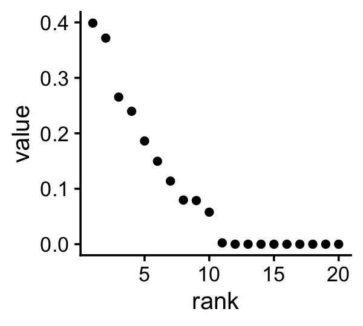
| Version | Author | Date |
|---|---|---|
| 262d2c9 | Peter Carbonetto | 2025-09-30 |
These are the factors that show the largest differences and are therefore promising candidates for capturing the major cell types:
y[y > 0.05]
# k1 k2 k3 k6 k7 k8 k13
# 0.11381650 0.05779666 0.39874928 0.18612674 0.07959239 0.37169550 0.14953714
# k14 k15 k17
# 0.23972105 0.26524583 0.07871183Now create a Structure plot with the cells grouped by major cell-type (the “level 1” annotation):
set.seed(1)
cell_type_factors <- c("k3","k6","k7","k14","k15")
cell_type <- sample_info$annotation_level1
cells <- which(cell_type == "CD4" | cell_type == "CD8")
cells <- sample(cells,1e5)
cells <- sort(c(cells,which(cell_type != "CD4" & cell_type != "CD8")))
p1 <- structure_plot(L[cells,cell_type_factors],gap = 10,n = 2000,
topics = c("k6","k7","k14","k3","k15"),
colors = factor_colors[cell_type_factors],
grouping = cell_type[cells]) +
labs(y = "membership",color = "",fill = "") +
theme(legend.position = "bottom")
p1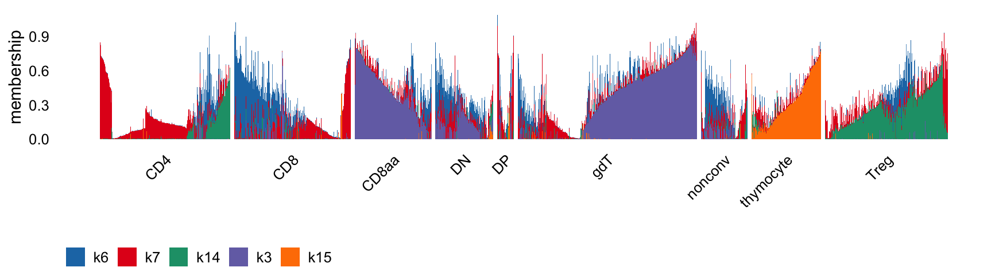
| Version | Author | Date |
|---|---|---|
| 262d2c9 | Peter Carbonetto | 2025-09-30 |
It is quite striking to me that the provided cluster labels do not correspond very well to the NMF factor memberships, which suggests to me that these “major cell types” not very accurate, and could be misleading.
Next let’s look for factors that correspond well with the organs.
organ <- sample_info$organ_simplified
y <- rank_effects_by_group_contrasts(L,organ)
k_set <- order(y,decreasing = TRUE)
qplot(1:k,y[k_set]) +
labs(x = "rank",y = "value") +
theme_cowplot(font_size = 12)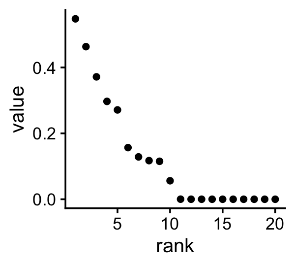
| Version | Author | Date |
|---|---|---|
| 262d2c9 | Peter Carbonetto | 2025-09-30 |
These are the factors that show the largest differences and therefore are promising factors for capturing “organ effects”:
y[y > 0.05]
# k1 k2 k3 k6 k7 k8 k13
# 0.11725757 0.12857370 0.54760948 0.37154572 0.11518424 0.46317824 0.27118805
# k14 k15 k17
# 0.05612275 0.15675769 0.29704757Here is the Structure plot by organ:
set.seed(1)
organ_factors <- c("k3","k15")
organ <- sample_info$organ_simplified
cells <- sort(c(sample(which(organ == "spleen"),6e4),
sample(which(organ == "LN"),6e4),
which(organ != "spleen" & organ != "LN")))
L1 <- L[cells,organ_factors]
L1 <- cbind(k0 = 0.01,L1)
p2 <- structure_plot(L1,gap = 10,n = 2000,grouping = organ[cells],topics = 3:1,
colors = c("black",factor_colors[organ_factors])) +
labs(y = "membership",color = "",fill = "") +
theme(legend.position = "bottom")
p2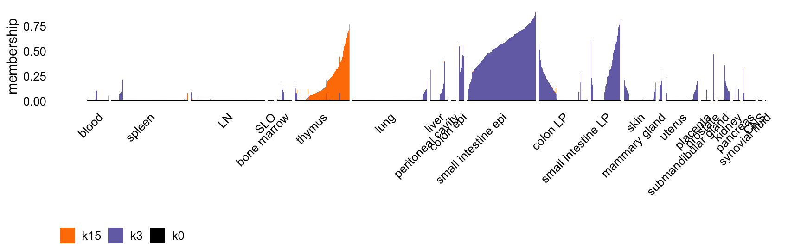
| Version | Author | Date |
|---|---|---|
| 262d2c9 | Peter Carbonetto | 2025-09-30 |
cond_broad <- sample_info$condition_broad
y <- rank_effects_by_group_contrasts(L,cond_broad)
k_set <- order(y,decreasing = TRUE)
qplot(1:k,y[k_set]) +
labs(x = "rank",y = "value") +
theme_cowplot(font_size = 12)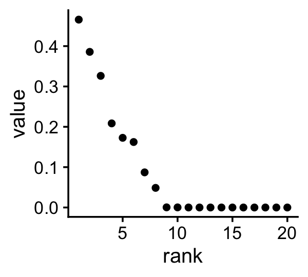
| Version | Author | Date |
|---|---|---|
| 262d2c9 | Peter Carbonetto | 2025-09-30 |
These are the factors that show the largest differences and therefore are promising factors for capturing “condition effects”:
y[y > 0.045]
# k1 k2 k6 k7 k8 k13 k14
# 0.04861822 0.08707475 0.20848112 0.16228845 0.46568989 0.32627595 0.38573739
# k17
# 0.17269812Here is the Structure plot by condition:
set.seed(1)
cond_factors <- c("k6","k14")
cond_broad <- sample_info$condition_broad
cells <- sort(c(sample(which(cond_broad == "healthy"),1e5),
which(cond_broad != "healthy")))
p3 <- structure_plot(L[cells,cond_factors],gap = 10,n = 2000,
topics = c("k6","k14"),
grouping = cond_broad[cells],
colors = factor_colors[cond_factors]) +
labs(y = "membership",color = "",fill = "") +
theme(legend.position = "bottom")
p3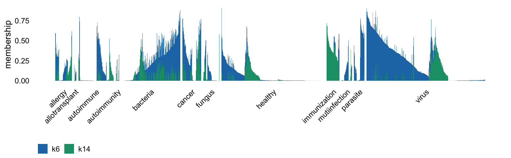
| Version | Author | Date |
|---|---|---|
| 262d2c9 | Peter Carbonetto | 2025-09-30 |
There are clearly some factors capturing some sort of effect of immunization/virus and another capturing infection (virus, bacteria, parasite, autoimmune), but we need to drill down to the cell types or perhaps the more detailed conditions to better understand these factors.
Let’s now look at whether there are factors that capture minor cell types within the major cell types. Let’s start with the CD4+ T cells.
cells <- which(sample_info$annotation_level1 == "CD4")
cluster <- sample_info$annotation_level2
cluster <- factor(cluster[cells])
L1 <- L[cells,]
y <- rank_effects_by_group_contrasts(L1,cluster)
k_set <- order(y,decreasing = TRUE)
qplot(1:k,y[k_set]) +
labs(x = "rank",y = "value") +
theme_cowplot(font_size = 12)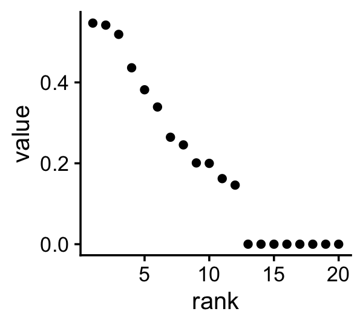
| Version | Author | Date |
|---|---|---|
| 262d2c9 | Peter Carbonetto | 2025-09-30 |
These are the factors that might capture the different types of CD4+ T cells:
y[y > 0.1]
# k1 k2 k3 k4 k6 k7 k8 k13
# 0.1998273 0.3818060 0.2009519 0.1621596 0.5187696 0.1460850 0.5466715 0.4361736
# k14 k16 k17 k18
# 0.3392281 0.2455422 0.5416581 0.2644556Here is the Structure plot for the CD4+ T cells:
set.seed(1)
cd4_factors <- c("k2","k4","k6","k7","k8","k14","k16","k17","k18")
big_clusters <- c("CD4_cl1","CD4_cl2","CD4_cl3")
cells <- sort(c(sample(which(is.element(cluster,big_clusters)),3e4),
which(!is.element(cluster,big_clusters))))
p4 <- structure_plot(L1[cells,cd4_factors],gap = 5,n = 2000,
topics = cd4_factors,
grouping = cluster[cells],
colors = factor_colors[cd4_factors]) +
labs(y = "membership",color = "",fill = "") +
theme(legend.position = "bottom")
p4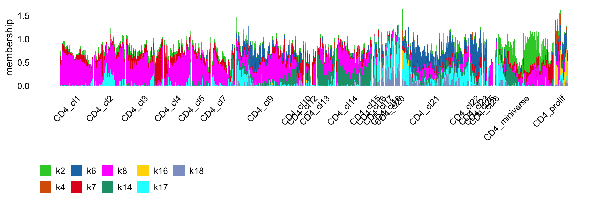
| Version | Author | Date |
|---|---|---|
| 262d2c9 | Peter Carbonetto | 2025-09-30 |
There is a lot of interesting substructure to make sense of within the CD4+ cells, but this substructure could also be shared by other cell types, so we need to look at the other cell types as well to make sense of this.
Let’s now examine the CD8+ T cells.
cells <- which(sample_info$annotation_level1 == "CD8" |
sample_info$annotation_level1 == "CD8aa")
cluster <- sample_info$annotation_level2
cluster <- factor(cluster[cells])
L1 <- L[cells,]
y <- rank_effects_by_group_contrasts(L1,cluster)
k_set <- order(y,decreasing = TRUE)
qplot(1:k,y[k_set]) +
labs(x = "rank",y = "value") +
theme_cowplot(font_size = 12)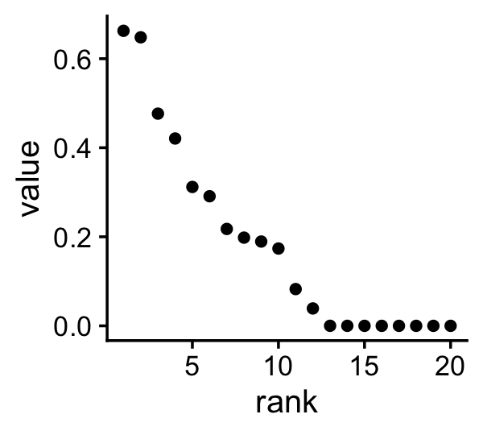
| Version | Author | Date |
|---|---|---|
| 262d2c9 | Peter Carbonetto | 2025-09-30 |
These are the factors that might capture the different types of CD8+ T cells:
y[y > 0.1]
# k1 k2 k3 k6 k7 k8 k13 k14
# 0.3119403 0.4207547 0.6479896 0.6626349 0.1736236 0.4766359 0.2910702 0.1981215
# k16 k17
# 0.2176254 0.1893556set.seed(1)
cd8_factors <- c("k2","k3","k6","k7","k8","k14","k16","k17")
cells <- sort(c(sample(which(cluster == "CD8_cl1"),2e4),
which(cluster != "CD8_cd1")))
p5 <- structure_plot(L1[cells,cd8_factors],gap = 5,n = 2000,
topics = cd8_factors,
grouping = cluster[cells],
colors = factor_colors[cd8_factors]) +
labs(y = "membership",color = "",fill = "") +
theme(legend.position = "bottom")
p5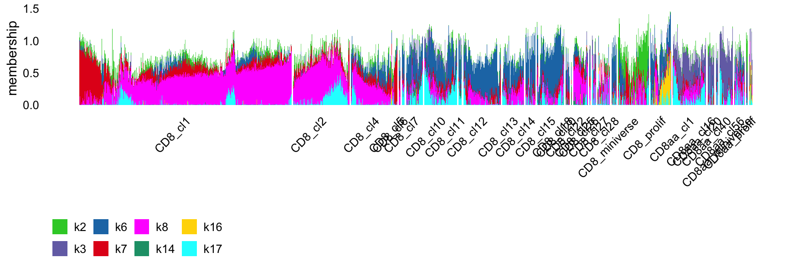
| Version | Author | Date |
|---|---|---|
| 262d2c9 | Peter Carbonetto | 2025-09-30 |
It is interesting that there is a lot of shared structure amongst the CD4+ and CD8+ T cells, but there are also some factors (GEPs) that are are unique to each.
Finally (for now), let’s take a closer look at the Treg cells:
cells <- which(sample_info$annotation_level1 == "Treg")
cluster <- sample_info$annotation_level2
cluster <- factor(cluster[cells])
L1 <- L[cells,]
y <- rank_effects_by_group_contrasts(L1,cluster)
k_set <- order(y,decreasing = TRUE)
qplot(1:k,y[k_set]) +
labs(x = "rank",y = "value") +
theme_cowplot(font_size = 12)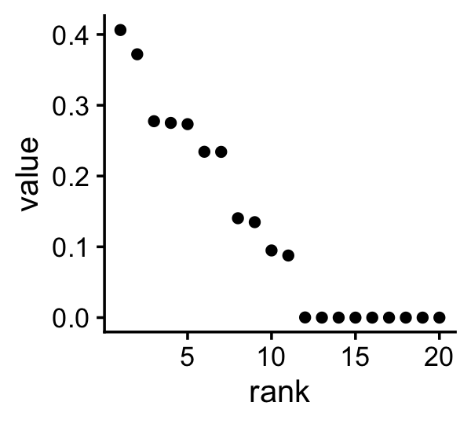
| Version | Author | Date |
|---|---|---|
| 262d2c9 | Peter Carbonetto | 2025-09-30 |
These are the factors that might capture the different types of Treg cells:
y[y > 0.05]Here is the Structure plot for the Treg cells:
set.seed(1)
treg_factors <- c("k1","k2","k4","k6","k7","k8","k14","k16","k17","k18")
cells <- sort(c(sample(which(cluster == "Treg_cl1")),
which(cluster != "Treg_cl1")))
p6 <- structure_plot(L1[cells,treg_factors],gap = 10,n = 2000,
topics = treg_factors,
grouping = cluster[cells],
colors = factor_colors[treg_factors]) +
labs(y = "membership",color = "",fill = "") +
theme(legend.position = "bottom")
p6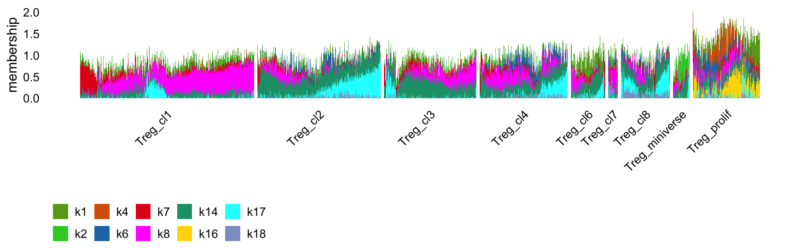
| Version | Author | Date |
|---|---|---|
| 262d2c9 | Peter Carbonetto | 2025-09-30 |
Let’s put everything we have so far into one unified figure:
plot_grid(p1,p2,p3,p4,p5,p6,
nrow = 6,ncol = 1,
rel_heights = c(5,5,5,6,6,6))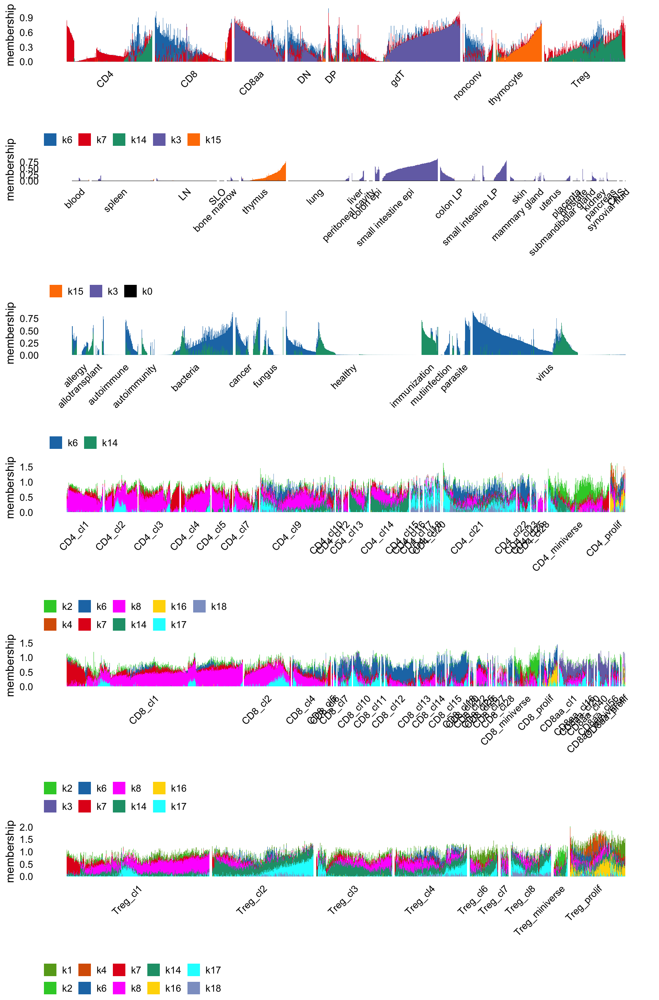
| Version | Author | Date |
|---|---|---|
| 262d2c9 | Peter Carbonetto | 2025-09-30 |
Factor 7 seems to be a batch effect?
pdat <- data.frame(IGT = sample_info$IGT,
k7 = L[,"k7"])
ggplot(pdat,aes(x = IGT,y = k7)) +
geom_boxplot() +
theme_cowplot(font_size = 8) +
theme(axis.ticks = element_blank(),
axis.text.x = element_text(angle = 90,hjust = 1))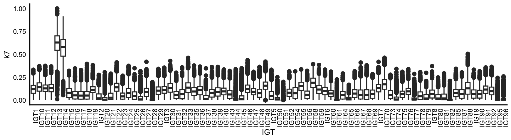
| Version | Author | Date |
|---|---|---|
| 262d2c9 | Peter Carbonetto | 2025-09-30 |
What is factor 2?
The hunt for the “resting GEP”…
genes <- c("Sell","Ccr7","Lef1","Satb1","Tcf7")
resting_factors <- c("k2","k8","k17")
effects_heatmap(F[genes,resting_factors])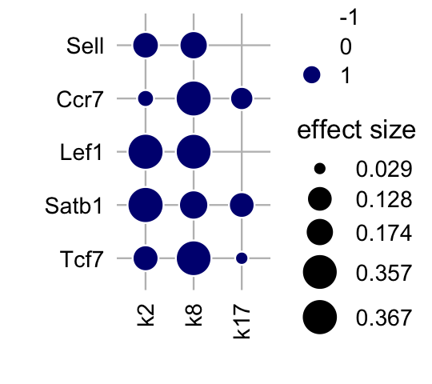
| Version | Author | Date |
|---|---|---|
| 262d2c9 | Peter Carbonetto | 2025-09-30 |
sessionInfo()
# R version 4.3.3 (2024-02-29)
# Platform: aarch64-apple-darwin20 (64-bit)
# Running under: macOS 15.7.1
#
# Matrix products: default
# BLAS: /Library/Frameworks/R.framework/Versions/4.3-arm64/Resources/lib/libRblas.0.dylib
# LAPACK: /Library/Frameworks/R.framework/Versions/4.3-arm64/Resources/lib/libRlapack.dylib; LAPACK version 3.11.0
#
# locale:
# [1] en_US.UTF-8/en_US.UTF-8/en_US.UTF-8/C/en_US.UTF-8/en_US.UTF-8
#
# time zone: America/Chicago
# tzcode source: internal
#
# attached base packages:
# [1] stats graphics grDevices utils datasets methods base
#
# other attached packages:
# [1] singlecelljamboreeR_0.1-39 cowplot_1.1.3
# [3] ggplot2_3.5.2 flashier_1.0.56
# [5] ebnm_1.1-42 fastTopics_0.7-25
# [7] Matrix_1.6-5
#
# loaded via a namespace (and not attached):
# [1] tidyselect_1.2.1 viridisLite_0.4.2 dplyr_1.1.4
# [4] farver_2.1.2 fastmap_1.2.0 lazyeval_0.2.2
# [7] reshape_0.8.9 promises_1.3.3 digest_0.6.37
# [10] lifecycle_1.0.4 invgamma_1.2 magrittr_2.0.3
# [13] compiler_4.3.3 rlang_1.1.6 sass_0.4.10
# [16] progress_1.2.3 tools_4.3.3 yaml_2.3.10
# [19] data.table_1.17.6 knitr_1.50 labeling_0.4.3
# [22] prettyunits_1.2.0 htmlwidgets_1.6.4 scatterplot3d_0.3-44
# [25] plyr_1.8.9 RColorBrewer_1.1-3 Rtsne_0.17
# [28] workflowr_1.7.1 withr_3.0.2 purrr_1.0.4
# [31] grid_4.3.3 susieR_0.14.22 git2r_0.33.0
# [34] colorspace_2.1-0 scales_1.4.0 gtools_3.9.5
# [37] dichromat_2.0-0.1 cli_3.6.5 rmarkdown_2.29
# [40] crayon_1.5.3 generics_0.1.4 RcppParallel_5.1.10
# [43] httr_1.4.7 reshape2_1.4.4 pbapply_1.7-2
# [46] cachem_1.1.0 stringr_1.5.1 splines_4.3.3
# [49] parallel_4.3.3 softImpute_1.4-3 matrixStats_1.2.0
# [52] vctrs_0.6.5 jsonlite_2.0.0 hms_1.1.3
# [55] mixsqp_0.3-54 ggrepel_0.9.6 irlba_2.3.5.1
# [58] trust_0.1-8 plotly_4.11.0 tidyr_1.3.1
# [61] jquerylib_0.1.4 glue_1.8.0 uwot_0.2.3
# [64] stringi_1.8.7 Polychrome_1.5.1 gtable_0.3.6
# [67] later_1.4.2 quadprog_1.5-8 tibble_3.3.0
# [70] pillar_1.11.0 htmltools_0.5.8.1 truncnorm_1.0-9
# [73] R6_2.6.1 rprojroot_2.0.4 evaluate_1.0.4
# [76] lattice_0.22-5 RhpcBLASctl_0.23-42 SQUAREM_2021.1
# [79] ashr_2.2-66 httpuv_1.6.14 bslib_0.9.0
# [82] Rcpp_1.1.0 deconvolveR_1.2-1 whisker_0.4.1
# [85] xfun_0.52 fs_1.6.6 pkgconfig_2.0.3